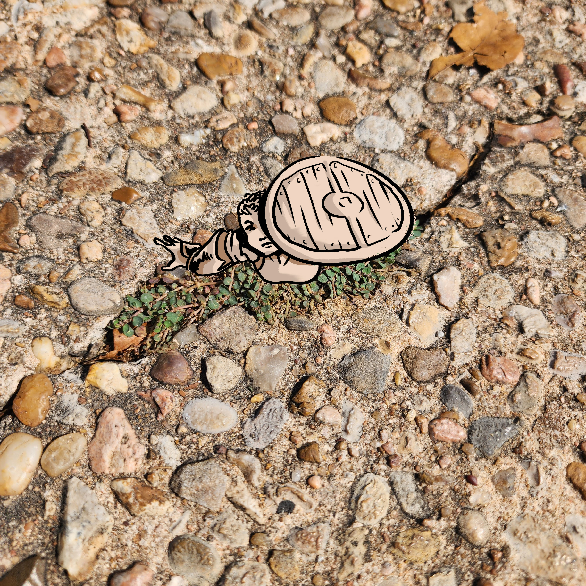

Spotted Spurge: The Fighter

The Spotted Spurge is prolific in even the most challenging of situations. Its rapid seed production allows it to establish itself and hold its ground, even in difficult terrain like sidewalks and paths.
Scientific Name: Euphorbia maculata
Lifespan: 3 months
Native to: Central/Eastern North America
Fighters have to be capable of holding their own in the face of danger, similar to this spurge; it gets trampled daily and lives in spite of it.